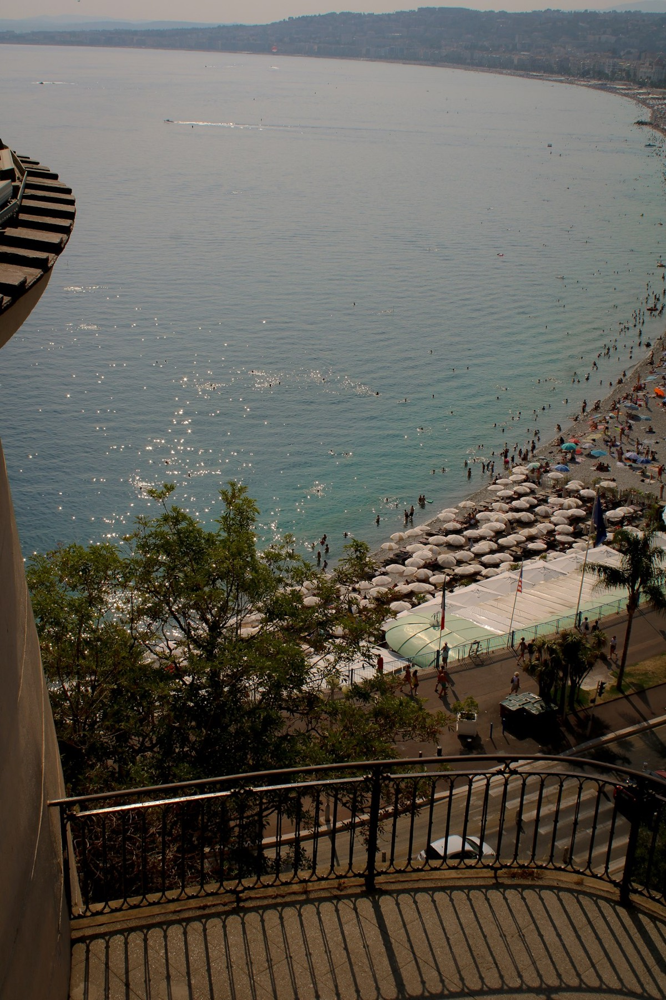
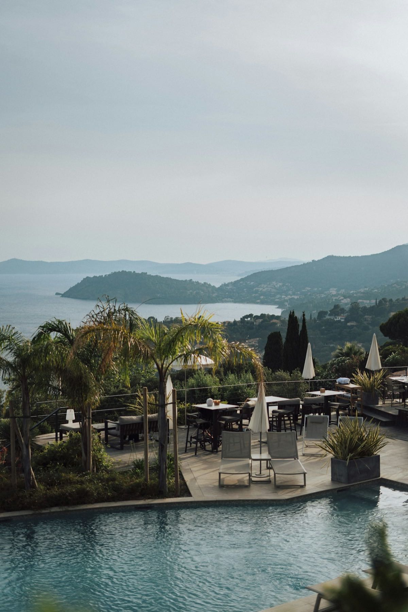
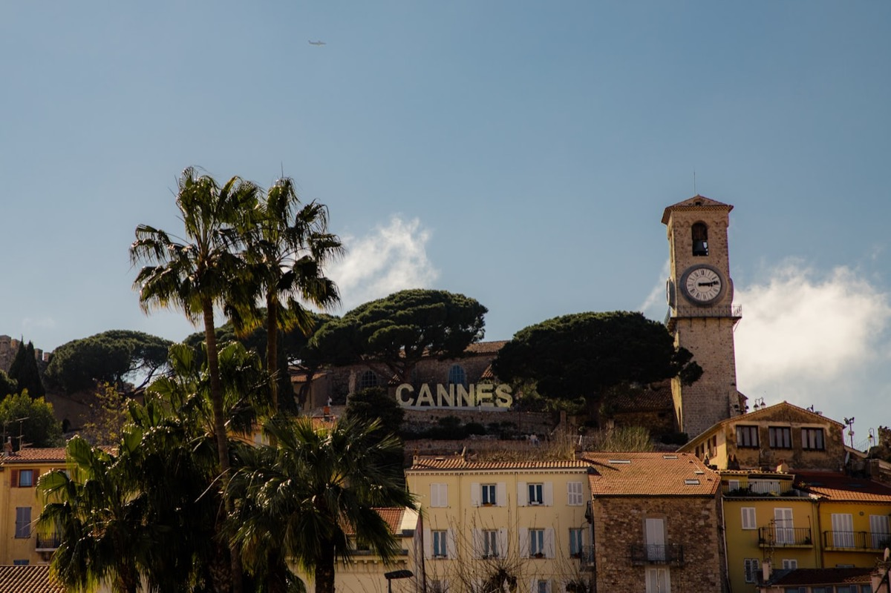

The Palais des Festivals & the Croisette

The address that says "Cannes" without spelling it out. The Palais des Festivals, with its legendary steps and 35,000 m² of flexible space, is the most iconic conference machine on the coast. International conventions, tech launches, award ceremonies: it handles a 2,000-person plenary as easily as a gala dinner facing the bay.
But the real luxury in Cannes is flow. From the Palais, it's a five-minute walk to a private beach on the Croisette for the evening. Brands have got it: you don't "book a room", you orchestrate a whole day where the scenery changes and nobody gets in a car. Plenary in the morning, lunch with your toes in the sand, a party under the stars. Cannes makes it almost easy, as long as you know the right people.
The hillside villas

Above the town, in the hills of La Californie and Super Cannes, hide villas you won't find in any brochure. Infinity pools, hanging terraces, 180° views over the bay and the Lérins Islands. This is the territory of private receptions, where exclusivity beats headcount.
What we love here: total privacy. No passers-by, no prying eyes, a fully private setting where a brand can unveil a product or gather its VIPs far from the bustle. The trade-off is demanding logistics: winding access roads, catering capacity to plan ahead, set-up down to the millimetre. Nothing insurmountable when you've already run ten dinners in these hills. It's exactly the kind of venue you "earn" through your contact book, not a search engine.
Private yachts

Some events face the sea. Others happen on it. A private yacht in the bay of Cannes is the signature venue par excellence: the one your guests talk about before they've even stepped aboard. Sunset cocktails, dinner at anchor off the islands, an after-party on the upper deck.
The yacht sets its own pace, and that's the charm: once you've cast off, the group is together, captive in the best sense, with no escape and no distractions. For a leadership committee, a confidential launch or a premium client thank-you, it never misses. On the production side, everything happens beforehand: tender shuttles, marine forecast, real capacity, onboard catering. Nobody becomes a stage manager at sea overnight, but done right, it's one of the most memorable formats on the Riviera.
Le Suquet & old Cannes

A stone's throw from the glitz of the Croisette, Le Suquet tells another Cannes story: cobbled lanes, ochre façades, the clock tower watching over the hill. It's the Cannes of brands looking for authenticity rather than bling: characterful restaurants, intimate squares, rooftop terraces overlooking the harbour.
We stage press dinners, partner evenings and lifestyle activations here that play the "real South" card: local produce, regional craftspeople, golden late-afternoon light. The contrast is powerful: you leave the red carpet and step into the postcard. And for guests who think they've seen everything Cannes has to offer, this is often where the surprise lands.